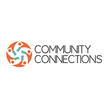

Innovation
Utilize emerging data and new tools to offer evidence based solutions to global challenges.
“…..As we prepare for COP 27, lest we overlook our Planet healing through Science and Religion…..”
Dr. Linus Maundu Muli
IRePliP Board Chair
The Interfaith Research Panel for a Living Planet (IRePLiP) is panel of experts spearheading evidence based decision making and research for a better living planet with key activities as follows;
Let it be for a Living Planet.
To make the world better through embracing and sharing evidence based solutions to address the global challenges.
Utilize emerging data and new tools to offer evidence based solutions to global challenges.
Embrace and share evidence based findings for the Earth's sustainable future.
Diversity for evidence based decision making through research, digital access and collaboration.
The panel shares expertise and materials as well as diverse approaches to studies within a larger and more comprehensive framework. This provides the basis for the creation of a permanent research infrastructure for decision making to transform our world as articulated through SDGs, Country’s action Agendas and Religious initiatives.
Decision makers and scientists need to establish the expanding evidence base required for decision making. At IRePLiP, we bring together scientists, decision makers and other various players to handle this critical area.
IRePLiP aims to constitute an inclusive network, to act as an open platform and provide a framework to foster research, communication, exchange and cooperation among various actors.
Some of our partners are;
